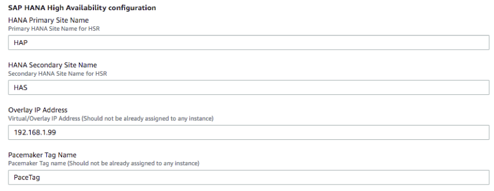
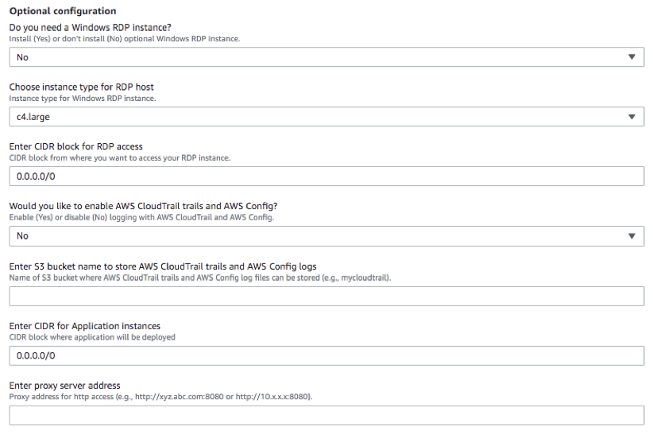
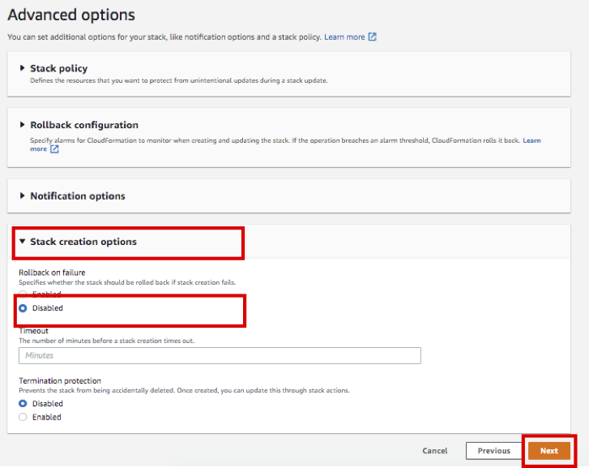

Task 01. SAP HANA Quick Starts
SAP HANA Quick Starts를 이용하여 SAP HANA High Availability Architecture를 손쉽게 구성합니다.
사전작업 : Key Pair 생성
HANA Database 및 Application Servers 에 접속하기 위한 Key Pair 를 생성 합니다.
- AWS Management Console에 로그인 한 뒤 Key Pairs Console 서비스에 접속합니다.
- Create key pair 버튼을 누릅니다.

- Name은 SAP-ImmersionDay-Lab 라고 입력 후 Create key pair 버튼을 누릅니다.

- 이번 WorkShop은 HANA DB 인스턴스는 Session Manager를 통해 접속하고, Bastion Host(Windows Server 2019)는 key pair를 사용하여 Administrator Password를 복호화 하고 원격 접속 프로그램을 통해 접속할 예정입니다. 다운로드 된 키는 안전한 위치에 보관합니다.(**주의 Lab02에서 사용할 예정입니다.)
SAP HANA Quick Starts
SAP HANA Quick Starts는 설치를 위한 다양한 옵션이 있습니다. 본 실습은 새로운 VPC에 HANA Database를 Multi-AZ 기반으로 구성합니다. SAP HANA Quick Starts에 대한 자세한 사항은 옆 링크를 참고하시기 바랍니다.(SAP HANA Quick Start Guide)
-
AWS Management Console에 로그인 한 뒤 SAP HANA Quick Starts 서비스에 접속합니다.
-
리전이 US East(N.Virginia) 인지 확인 합니다. 그리고 Next 버튼을 선택합니다.

-
Stack name은 이전에 사용했던 name과 동일하지 않는한 변경하지 않습니다.
-
Step2.Specify stack details 은 S4HANA 설치를 위한 VPC, SAP HANA, SAP S/4HANA ABAB Cluster 설정 옵션을 입력하는 단계입니다.
-
Step2.1 Network infrastructure configuration 옵션은 아래와 같이 입력 합니다.
- VPC CIDR(default) : 10.0.0.0/16
- Availability Zones for subnet creation(선택) : us-east-1a, us-east-1b
- CIDR block for Private subnet 1(default) : 10.0.1.0/24
- CIDR block for Private subnet 2(default) : 10.0.2.0/24
- Enter CIDR block for Public subnet 1(default) : 10.0.3.0/24
- Enter CIDR block for Public subnet 2(default) : 10.0.4.0/24

-
Step2.2 Server and storage configuration 옵션은 아래와 같이 입력 합니다.
- Choose operating system for SAP HANA : SuSELinux12SP4ForSAP-BYOS
- Enter SUSE BYOS Registration Code : XXXXXXXXXXXXXXXX (자신의 Registration code를 입력 합니다)
- Choose instance type for SAP HANA : r5.4xlarge
- Enter Dedicated Host ID :
- Choose key pair : SAP-ImmersionDay-Lab
- Choose storage volume type for SAP HANA Log : gp2
- Choose storage volume type for SAP HANA Data : gp2
- Would you like to turn on encryption? : no

-
Step2.3 SAP HANA database configuration 옵션은 아래와 같이 입력 합니다.
- Enter domain name : local
- Enter SAP HANA Primary host name : prihana
- Enter SAP HANA Secondary host name : sechana
- Enter SAP HANA system ID : HDB
- Enter SAP HANA instance number : 00
- Enter SAP HANA password : Init12345!
- Enter SAP HANA Server timezone : UC
- Enter Amazon S3 URL for SAP HANA software : (e.g s3://sap-immsersionday-hol1/hanadb/)
- Install SAP HANA software? : Yes

-
Step2.4 SAP HANA High Availability configuration 옵션은 기본 설정 그대로 사용합니다.
- HANA Primary Site Name : HAP
- HANA Secondary Site Name : HAS
- Overlay IP Address : 192.168.1.99
- Pacemaker Tag Name : PaceTag 
-
Step2.5 Optional configuration RDP 및 Bastion 설정은 Lab02에서 다룰 예정이므로 변경없이 No 로 선택합니다. 나머지 옵션은 Skip 합니다. 
-
Step2.6 Advanced configuration (Do not modify unless directed by AWS Support) 은 Default 설정을 사용합니다 Next 버튼을 선택합니다.

-
Step3.Configure stack options 은 Stack 실행 옵션을 설정하는 단계 입니다.
-
Error 발생 시 원활한 Trouble Shooting을 위해 Rollback 옵션을 Disabled 로 변경합니다. 그리고 Next 버튼을 선택합니다. 
-
Step4.Review 은 이전 설정을 확인하는 단계 입니다. 제일 하단 Capabilities 의 두 체크 Box를 선택 후 Create stack 버튼을 선택합니다.

-
SAP-HANA-HA 스택이 생성 되었습니다. Status가 CREATE_COMPLETE 가 될 때 까지 기다립니다.


Error 가 발생했을 경우 진행하고 있는 Solutions Architect에게 문의 합니다.
Lab01 실습이 종료 되었습니다. 다음은 Lab02를 진행합니다.